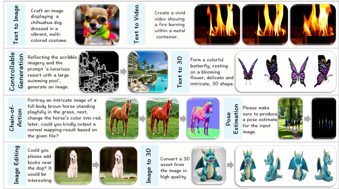
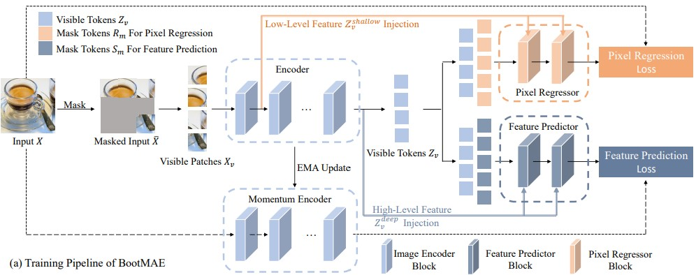
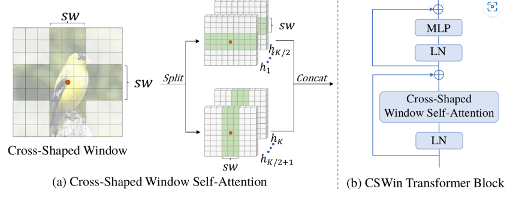

|
Dongdong Chen I'm a Principal Research Manager at Microsoft GenAI, WA, and I am leading the post-training team for Microsoft's Phi family of small language models (SLMs). I am the main model developer for many impactful Microsoft Product features, including but not limited to BackgroundRemoval, Generative Eraser and PPT summarization in Office Copilot. My research interests includes large-scale multi-modality and single-modality pretraining \& post-training, deep generative models (e.g., GAN/Diffusion, Image-to-Image translation), general representation learning (such as fundamental network structure design), and AI security (e.g., adversarial learning and model IP protection). I served as the Area Chairs of NeurIPs 23/24/25, CVPR 22/23, ECCV 2022, ICPR 22/24, WACV 24/25, SPC of AAAI 2022, and the Associated Editor of Pattern Recognition and IEEE TMM. Email / CV / Google Scholar |

|
|
FreeFlux: Understanding and Exploiting Layer-Specific Roles in RoPE-Based MMDiT for Versatile Image Editing
Tianyi Wei, Yifan Zhou, Dongdong Chen, Xingang Pan International Conference on Computer Vision 2025 (ICCV 2025) |
|
|
I2V3D: Controllable image-to-video generation with 3D guidance
Zhiyuan Zhang, Dongdong Chen, Jing Liao International Conference on Computer Vision 2025 (ICCV 2025) |
|
|
VLM4D: Towards Spatiotemporal Awareness in Vision Language Models
Shijie Zhou, Alexander Vilesov, Xuehai He, Ziyu Wan, Shuwang Zhang, Aditya Nagachandra, Di Chang, Dongdong Chen, Xin Eric Wang, Achuta Kadambi International Conference on Computer Vision 2025 (ICCV 2025) |
|
|
Phi-4-Mini-Reasoning: Exploring the Limits of Small Reasoning Language Models in Math
Haoran Xu, Baolin Peng, Hany Awadalla, Dongdong Chen, Yen-Chun Chen, Mei Gao, Young Jin Kim, Yunsheng Li, Liliang Ren, Yelong Shen, Shuohang Wang, Weijian Xu, Jianfeng Gao, Weizhu Chen IEEE/CVF Conference on Computer Vision and Pattern Recognition (CVPR 2025) |
|
|
Phi-4-Mini Technical Report: Compact yet Powerful Multimodal Language Models via Mixture-of-LoRAs
Microsoft GenAI, I am leading the post-training part. |
|
|  |
Olympus: A Universal Task Router for Computer Vision Tasks
Yuanze Lin, Yunsheng Li, Dongdong Chen, Weijian Xu, Ronald Clark, Philip HS Torr IEEE/CVF Conference on Computer Vision and Pattern Recognition (CVPR 2025) |
|
SmartEraser: Remove Anything from Images using Masked-Region Guidance
Longtao Jiang, Zhendong Wang, Jianmin Bao, Wengang Zhou, Dongdong Chen, Lei Shi, Dong Chen, Houqiang Li IEEE/CVF Conference on Computer Vision and Pattern Recognition (CVPR 2025) |
|
|
UNICL-SAM: Uncertainty-Driven In-Context Segmentation with Part Prototype Discovery
Dianmo Sheng, Dongdong Chen, Zhentao Tan, Qiankun Liu, Qi Chu, Tao Gong, Bin Liu, Jing Han, Wenbin Tu, Shengwei Xu, Nenghai Yu IEEE/CVF Conference on Computer Vision and Pattern Recognition (CVPR 2025) |
|
|
Show and Segment: Universal Medical Image Segmentation via In-Context Learning
Yunhe Gao, Di Liu, Zhuowei Li, Yunsheng Li, Dongdong Chen, Mu Zhou, Dimitris N. Metaxas IEEE/CVF Conference on Computer Vision and Pattern Recognition (CVPR 2025) |
|
|
SmartEraser: Remove Anything from Images using Masked-Region Guidance
Longtao Jiang, Zhendong Wang, Jianmin Bao, Wengang Zhou, Dongdong Chen, Lei Shi, Dong Chen, Houqiang Li IEEE/CVF Conference on Computer Vision and Pattern Recognition (CVPR 2025) |
|
|
SGEdit: Bridging LLM with Text2Image Generative Model for Scene Graph-based Image Editing
Zhiyuan Zhang, Dongdong Chen, Jing Liao Siggraph Asia 2024 |
|
|
Phi-3 Technical Report: A Highly Capable Language Model Locally on Your Phone
Microsoft GenAI, I am leading the multimodal post-training part. |
|
|
Exploring Pre-trained Text-to-Video Diffusion
Models for Referring Video Object Segmentation
Zixin Zhu, Xuelu Feng, Dongdong Chen, Junsong Yuan, Chunming Qiao, and Gang Hua European Conference on Computer Vision (ECCV2024) |
|
|
OmniViD: A Generative Framework for Universal Video Understanding
Junke Wang, Dongdong Chen, Chong Luo, Bo He, Lu Yuan, Zuxuan Wu, Yu-Gang Jiang IEEE/CVF Conference on Computer Vision and Pattern Recognition (CVPR 2024) |
|

|
Towards More Unified In-context Visual Understanding
Dianmo Sheng, Dongdong Chen, Zhentao Tan, Qiankun Liu, Qi Chu, Jianmin Bao, Tao Gong, Bin Liu, Shengwei Xu, Nenghai Yu IEEE/CVF Conference on Computer Vision and Pattern Recognition (CVPR 2024) |

|
Uni-ControlNet: All-in-One Control to Text-to-Image Diffusion Models
Shihao Zhao, Dongdong Chen, Yen-Chun Chen, Jianmin Bao, Shaozhe Hao, Lu Yuan, Kwan-Yee K. Wong Thirty-Seventh Conference on Neural Information Processing Systems (NeurIPs 2023) |

|
HairCLIPv2: Unifying Hair Editing via Proxy Feature Blending
Tianyi Wei, Dongdong Chen, Wenbo Zhou, Jing Liao, Weiming Zhang, Gang Hua, Nenghai Yu International Conference on Computer Vision (ICCV 2023) |
|
AvatarCraft: Transforming Text into Neural Human Avatars with Parameterized Shape and Pose Control
Ruixiang Jiang, Can Wang, Jingbo Zhang, Menglei Chai, Mingming He, Dongdong Chen, Jing Liao International Conference on Computer Vision (ICCV 2023) |
|
|
X-Paste: Revisiting Scalable Copy-Paste for Instance Segmentation using CLIP and StableDiffusion
Hanqing Zhao, Dianmo Sheng, Jianmin Bao, Dongdong Chen, et al., Nenghai Yu International Conference on Machine Learning (ICML 2023) |
|
|
Masked Video Distillation: Rethinking Masked Feature Modeling for Self-supervised Video Representation Learning
Rui Wang, Dongdong Chen, Zuxuan Wu, Yinpeng Chen, Xiyang Dai, Mengchen Liu, Lu Yuan, Yu-Gang Jiang IEEE Conference on Computer Vision and Pattern Recognition (CVPR 2023) |
|

|
Look Before You Match: Instance Understanding Matters in Video Object Segmentation
Junke Wang, Dongdong Chen, Zuxuan Wu, Chong Luo, Chuanxin Tang, Xiyang Dai, Yucheng Zhao, Yujia Xie, Lu Yuan, Yu-Gang Jiang IEEE Conference on Computer Vision and Pattern Recognition (CVPR 2023) |

|
Streaming Video Model
Yucheng Zhao, Chong Luo, Chuanxin Tang, Dongdong Chen, Noel C Codella, Zheng-Jun Zha IEEE Conference on Computer Vision and Pattern Recognition (CVPR 2023) |

|
Improving Commonsense in Vision-Language Models via Knowledge Graph Riddles
Shuquan Ye, Yujia Xie, Dongdong Chen, Yichong Xu, Lu Yuan, Chenguang Zhu, Jing Liao IEEE Conference on Computer Vision and Pattern Recognition (CVPR 2023) |
|
MaskCLIP: Masked Self-Distillation Advances Contrastive Language-Image Pretraining
Xiaoyi Dong, Jianmin Bao, Yinglin Zheng, Ting Zhang, Dongdong Chen, Hao Yang, Ming Zeng, Weiming Zhang, Lu Yuan, Dong Chen, Fang Wen, Nenghai Yu IEEE Conference on Computer Vision and Pattern Recognition (CVPR 2023) |
|

|
Peco: Perceptual codebook for bert pre-training of vision transformers
Xiaoyi Dong, Jianmin Bao, Ting Zhang, Dongdong Chen, Weiming Zhang, Lu Yuan, Dong Chen, Fang Wen, Nenghai Yu Thirty-Seventh AAAI Conference on Artificial Intelligence (AAAI 2023), AAAI 2023 Top-3 Influential paper!!! |
|
i-Code: An Integrative and Composable Multimodal Learning Framework
Ziyi Yang, Yuwei Fang, Chenguang Zhu, Reid Pryzant, Dongdong Chen, et.al, Xuedong Huang Thirty-Seventh AAAI Conference on Artificial Intelligence (AAAI 2023) |
|
|
OmniVL: One Foundation Model for Image-Language and Video-Language Tasks
Junke Wang, Dongdong Chen, Zuxuan Wu, Chong Luo, Luowei Zhou, Yucheng Zhao, Yujia Xie, Ce Liu, Yu-Gang Jiang, Lu Yuan Thirty-sixth Conference on Neural Information Processing Systems (NeurIPs 2022) |
|

|
REVIVE: Regional Visual Representation Matters in Knowledge-Based Visual Question Answering
Yuanze Lin, Yujia Xie, Dongdong Chen, Yichong Xu, Chenguang Zhu, Lu Yuan Thirty-sixth Conference on Neural Information Processing Systems (NeurIPs 2022) |
|  |
Bootstrapped Masked Autoencoders for Vision BERT Pretraining
Xiaoyi Dong, Jianmin Bao, Ting Zhang, Dongdong Chen, Weiming Zhang, Lu Yuan, Dong Chen, Fang Wen, Nenghai Yu European Conference on Computer Vision (ECCV 2022) |
|
BEVT: BERT Pretraining of Video Transformers
Rui Wang, Dongdong Chen, Zuxuan Wu, Yinpeng Chen, Xiyang Dai, Mengchen Liu, Yugang Jiang, Luowei Zhou, Lu Yuan IEEE Conference on Computer Vision and Pattern Recognition (CVPR 2022) |
|
|
Large Scale Pre-training for Person Re-identification with Noisy Labels
Dengpan Fu, Dongdong Chen, Hao Yang, Jianmin Bao, Lu Yuan, Lei Zhang, Houqiang Li, Dong Chen, Fang Wen IEEE Conference on Computer Vision and Pattern Recognition (CVPR 2022) |
|

|
HairCLIP: Design Your Hair by Text and Reference Image
Tianyi Wei, Dongdong Chen, Wenbo Zhou, Jing Liao, Zhentao Tan, Lu Yuan, Weiming Zhang, Nenghai Yu IEEE Conference on Computer Vision and Pattern Recognition (CVPR 2022) |

|
CLIP-NeRF: Text-and-Image Driven Manipulation of Neural Radiance Fields
Can Wang, Menglei Chai, Mingming He, Dongdong Chen, Jing Liao IEEE Conference on Computer Vision and Pattern Recognition (CVPR 2022) |
|
General Facial Representation Learning in a Visual-Linguistic Manner
Yinglin Zheng, Hao Yang, Ting Zhang, Jianmin Bao, Dongdong Chen, Yangyu Huang, Lu Yuan, Dong Chen, Ming Zeng, Fang Wen IEEE Conference on Computer Vision and Pattern Recognition (CVPR 2022 Oral) |
|

|
Vector Quantized Diffusion Model for Text-to-Image Synthesis
Shuyang Gu, Dong Chen, Jianmin Bao, Fang Wen, Bo Zhang, Dongdong Chen, Lu Yuan, Baining Guo IEEE Conference on Computer Vision and Pattern Recognition (CVPR 2022 Oral) |

|
Mobile-Former: Bridging MobileNet and Transformer
Yinpeng Chen, Xiyang Dai, Dongdong Chen, Mengchen Liu, Xiaoyi Dong, Lu Yuan, Zicheng Liu IEEE Conference on Computer Vision and Pattern Recognition (CVPR 2022 Oral) |
|  |
CSWin Transformer: A General Vision Transformer Backbone with Cross-Shaped Windows
Xiaoyi Dong, Jianmin Bao, Dongdong Chen, Weiming Zhang, Nenghai Yu, Lu Yuan, Dong Chen, Baining Guo IEEE Conference on Computer Vision and Pattern Recognition (CVPR 2022), CVPR2022 Top-10 Influential paper!!! |

|
Reduce Information Loss in Transformers for Pluralistic Image Inpainting
Qiankun Liu, Zhentao Tan, Dongdong Chen, Qi Chu, Xiyang Dai, Yinpeng Chen, Mengchen Liu, Lu Yuan, Nenghai Yu IEEE Conference on Computer Vision and Pattern Recognition (CVPR 2022) |

|
Bringing Old Films Back to Life
Ziyu Wan, Bo Zhang, Dongdong Chen, Jing Liao IEEE Conference on Computer Vision and Pattern Recognition (CVPR 2022) |

|
High-Fidelity Pluralistic Image Completion with Transformers
Ziyu Wan, Jingbo Zhang, Dongdong Chen, Jing Liao International Conference on Computer Vision (ICCV 2021) |
|
Improve Unsupervised Pretraining for Few-label Transfer
Suichan Li, Dongdong Chen, Yinpeng Chen, Lu Yuan, Lei Zhang, Qi Chu, Bin Liu, Nenghai Yu International Conference on Computer Vision (ICCV 2021) |
|

|
Unsupervised Pre-training for Person Re-identification
Dengpan Fu, Dongdong Chen, Jianmin Bao, Hao Yang, Lu Yuan, Lei Zhang, Houqiang Li, Dong Chen IEEE Conference on Computer Vision and Pattern Recognition (CVPR 2021) |
|
Dynamic Convolution via Matrix Decomposition
Yunsheng Li, Yinpeng Chen, Xiyang Dai, Mengchen Liu, Dongdong Chen, Ye Yu, Lu Yuan, Zicheng Liu, Mei Chen, Nuno Vasconcelos International Conference on Learning Representations 2021 |
|
|
Improved Image Matting via Real-time User Clicks and Uncertainty Estimation
Tianyi Wei, Dongdong Chen, Wenbo Zhou, Jing Liao, Hanqing Zhao, Weiming Zhang, Nenghai Yu IEEE Conference on Computer Vision and Pattern Recognition (CVPR 2021) |
|

|
Diverse Semantic Image Synthesis via Probability Distribution Modeling
Zhentao Tan, Menglei Chai, Dongdong Chen, Jing Liao, Qi Chu, Bin Liu, Gang Hua, Nenghai Yu IEEE Conference on Computer Vision and Pattern Recognition (CVPR 2021) |

|
Efficient Semantic Image Synthesis via Class-Adaptive Normalization
Zhentao Tan, Dongdong Chen, Qi Chu, Menglei Chai, Jing Liao, Mingming He, Lu Yuan, Gang Hua Nenghai Yu IEEE Transactions on Pattern Analysis and Machine Intelligence (TPAMI 2021) |

|
Passport-aware Normalization for Deep Model Protection
Jie Zhang, Dongdong Chen, Jing Liao, Weiming Zhang, Gang Hua, Nenghai Yu Advances in Neural Information Processing Systems (NeurIPs 2020) |
|
MichiGAN: Multi-Input-Conditioned Hair Image Generation for Portrait Editing
Zhentao Tan, Menglei Chai, Dongdong Chen, Jing Liao, Qi Chu, Lu Yuan, Sergey Tulyakov, Nenghai Yu ACM Transactions on Graphics (SIGGRAPH) 2020 |
|

|
Bringing Old Photos Back to Life
Ziyu Wan, Bo Zhang, Dongdong Chen, Pan Zhang, Dong Chen, Jing Liao, Fan Wen IEEE Conference on Computer Vision and Pattern Recognition (CVPR 2020 Oral), Over 15.3K github stars!!! |

|
Density-Aware Graph for Deep Semi-Supervised Visual Recognition
Suichan Li, Bin Liu, Dongdong Chen, Qi Chu, Lu Yuan, Nenghai Yu IEEE Conference on Computer Vision and Pattern Recognition (CVPR 2020) |
|
Model Watermarking for Image Processing Networks
Jie Zhang*, Dongdong Chen, et al., Nenghai Yu Thirty-Fourth AAAI Conference on Artificial Intelligence (AAAI 2020) |
|
|
A General Decoupled Learning Framework for Parameterized Image Operators
Qingnan Fan*, Dongdong Chen*, Lu Yuan, Gang Hua, Nenghai Yu, Baoquan Chen (*Equal Contribution) IEEE Transactions on Pattern Analysis and Machine Intelligence (TPAMI 2019) |
|

|
Progressive Color Transfer with Dense Semantic Correspondences
Mingming He, Jing Liao, Dongdong Chen*, Lu Yuan, Pedro V Sander ACM TOG 2018 |

|
Decouple Learning for Parameterized Image Operators
Qingnan Fan*, Dongdong Chen*, Lu Yuan, Gang Hua, Nenghai Yu, Baoquan Chen (* Equal Contribution) European Conference on Computer Vision 2018 |

|
Deep Exemplar-based Colorization
Mingming He*, Dongdong Chen*, Jing Liao, Pedro V.Sander, Lu Yuan (* Equal Contribution) ACM Transactions on Graphics (SIGGRAPH) 2018 |

|
Stereoscopic Neural Style Transfer
Dongdong Chen, Lu Yuan, Jing Liao, Nenghai Yu, Gang Hua IEEE Conference on Computer Vision and Pattern Recognition 2018 |

|
Coherent Online Video Style Transfer
Dongdong Chen, Jing Liao, Lu Yuan, Nenghai Yu, Gang Hua International Conference on Computer Vision 2017 |
|
StyleBank: An Explicit Representation for Neural Image Style Transfer
Dongdong Chen, Lu Yuan, Jing Liao, Nenghai Yu, Gang Hua IEEE Conference on Computer Vision and Pattern Recognition 2017 |
|
website template borrowed from source code. Thanks! |